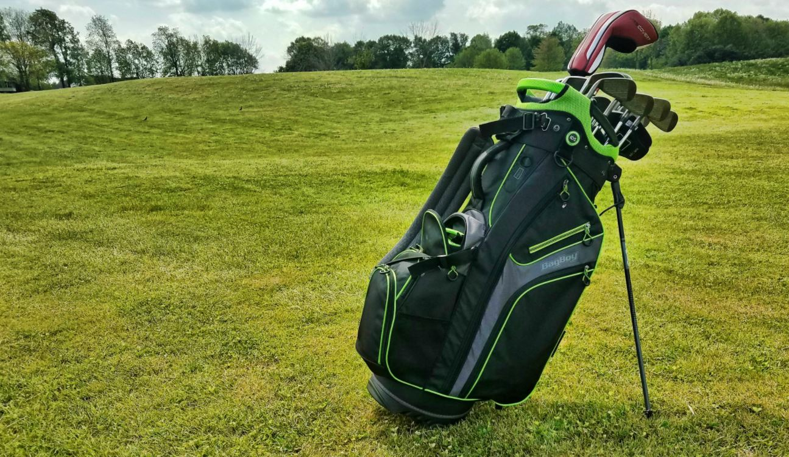

Equipment
-
Golf clubs
- A set of clubs contains various kinds of golf clubs that serve various purposes
- 'Woods' are used to hit the ball long distances. They are typically used in the tee box to start off the hole.
- Irons are used to hit shorter distances. most often to approach the green.
- putter is used only on the putting green. It's the club used to put the ball into the hole
- Maximum of 14 clubs is allowed in a players bag.
-
Golf bag
- A golf bag is used to carry a set of golf clubs as well as all the other tools needed in a golf course
- Golf balls
-
A tee
- A tee is allowed only for the first stroke on each hole. It's used to raise the golf ball from the ground to allow for a longer distance shot
- Golf shoes with metal or plastic spikes which are designed to increase traction, thus allowing for longer and more accurate shots.

Go Back
Home